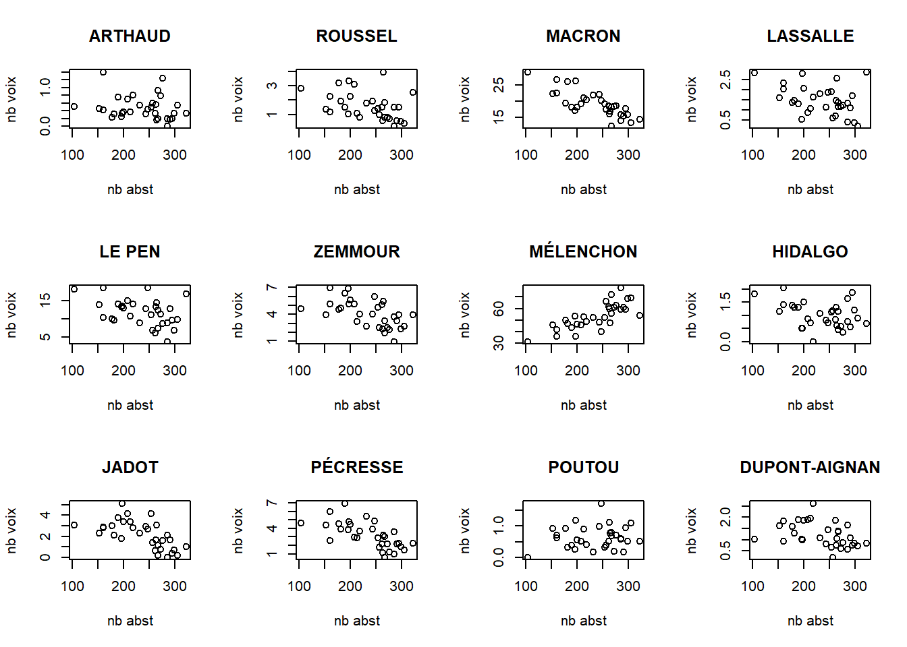
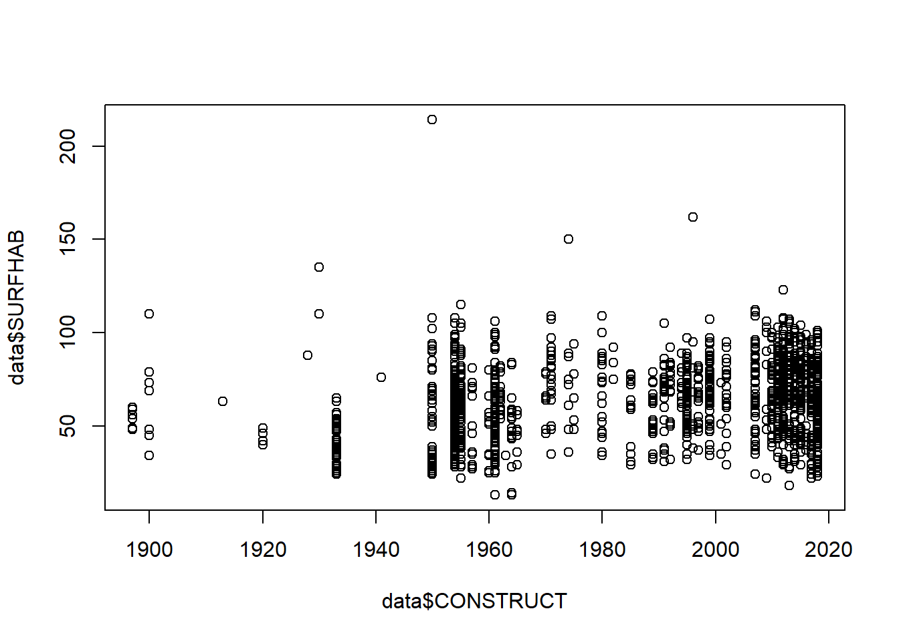
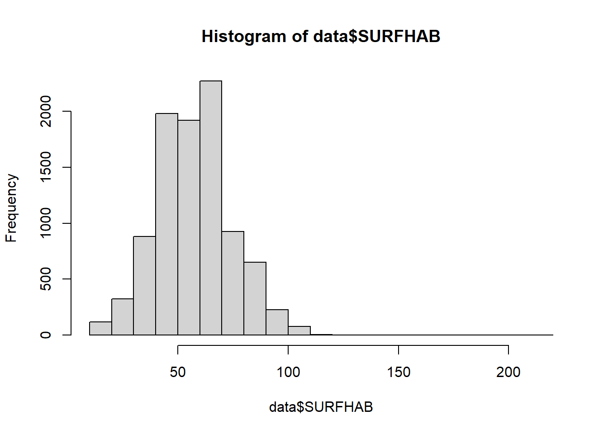
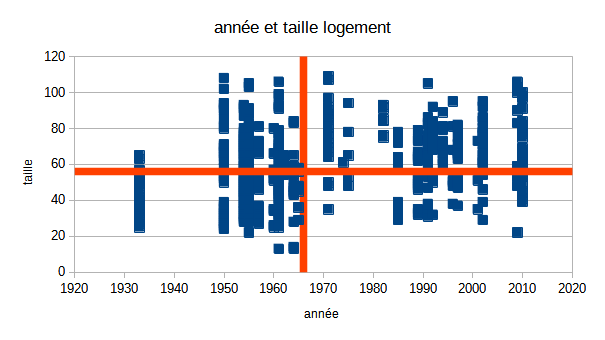
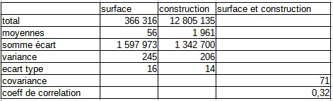
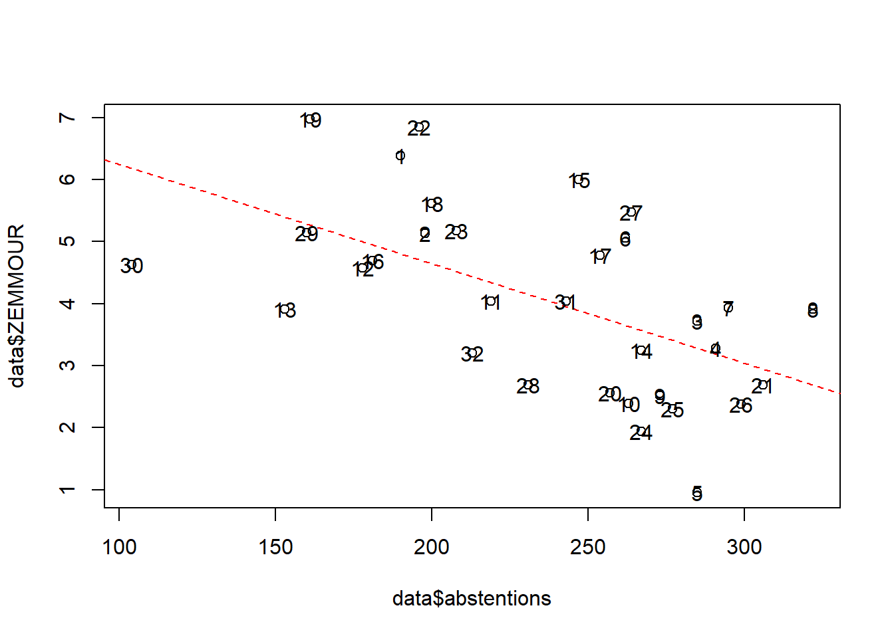
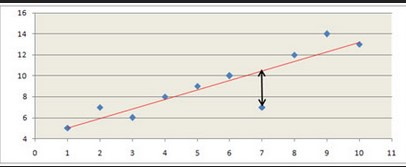
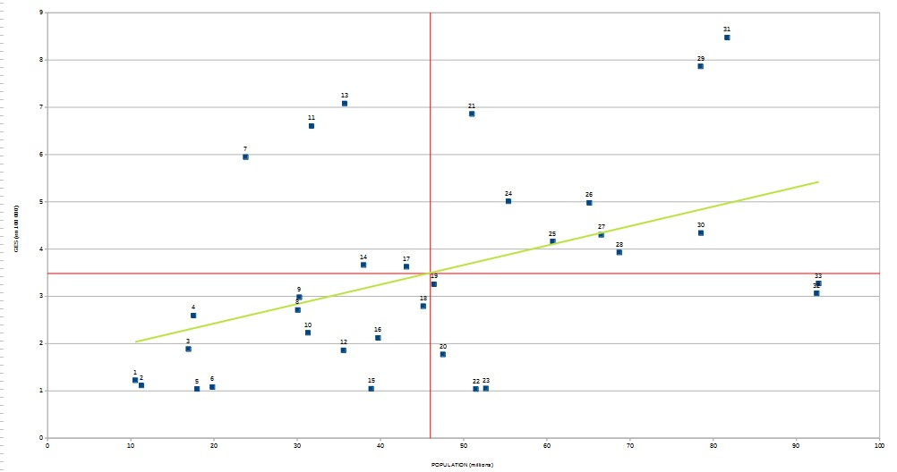

Toujours les mêmes, mais il s’agit d’avoir deux variables continues, on va prendre année et surface.
Comprendre les variables
Enoncer les hypothèses
De quel type sont les variables ?
data <- read.csv("data/rplsBondy.csv")
data <- data [, c("SURFHAB","CONSTRUCT", "COMPLGEO")]
summary(data)## SURFHAB CONSTRUCT COMPLGEO
## Min. : 13.00 Min. :1913 Length:6534
## 1st Qu.: 45.00 1st Qu.:1954 Class :character
## Median : 56.00 Median :1960 Mode :character
## Mean : 56.16 Mean :1961
## 3rd Qu.: 65.00 3rd Qu.:1962
## Max. :214.00 Max. :2010write.csv(data, "data/rplsSurfConst.csv")plot(data$SURFHAB, data$CONSTRUCT)
…ou…
plot(data$CONSTRUCT, data$SURFHAB)
sélectionner uniquement les 2 colonnes de données
types de diagramme ; xy - dispersion
intervertir x et y (onglet série de données) : comprendre le rôle des deux variables
Retour sur les distributions pour enlever les valeurs aberrantes
hist(data$SURFHAB)
On recherche des bornes permettant d’avoir un nuage de points “cohérent”. Avec le tableur, on fait le graphique puis on ajuste avec le filtre.
Savoir-faire tableur : axes secondaires
Pour le premier : courbe valeur moyenne, pour le second axe secondaire

On observe les quadrants, ils permettent de déterminer le sens de la corrélation.
Savoir-faire tableur : utiliser les noms pour les colonnes construction et surface
On rajoute des colonnes pour chaque variable: - écart à la moyenne - carré et pour les deux variables - produit des écarts
Dans un nouveau tableau, pour chaque variable - moyenne - somme des écarts à la moyenne - Variance - Ecart type
puis covariance (produit des écarts / effectif)
et coeff (cov / produit des écarts types)
 ### Interprétation
Le coefficient évolue de -1 à +1
Si r = 0, les variables ne sont pas corrélées.
Dans les autres cas, les variables sont corrélées négativement ou positivement.
plus la variable est proche de 1, plus l’intensité de la relation entre les deux variables est forte.
Dans notre exemple, lien moyen.
varCorr <- data [, c( "SURFHAB", "CONSTRUCT")]
cor(varCorr)## SURFHAB CONSTRUCT
## SURFHAB 1.0000000 0.3110554
## CONSTRUCT 0.3110554 1.0000000La droite de régression minimise la somme des carrés des distances verticales entre chacun des points du nuage et la droite recherchée.
Pour une droite aX+b
a (la pente) = covariance / variance X
b (ordonnée de l’origine) = moyenne de y - a * moyenne de y
plot(data$CONSTRUCT, data$SURFHAB,
xlim = c(1935,2022), ylim = c(c(0, 125)))
data <- data [data$SURFHAB < 120 | data$CONSTRUCT > 1935, ]
lm <- lm(data$SURFHAB~data$CONSTRUCT)
abline(lm, lty =2)
Dans calc, cliquer sur les points et insérer courbe de tendance
C’est le carré du coefficient de corrélation linéaire
cor(varCorr)^2## SURFHAB CONSTRUCT
## SURFHAB 1.00000000 0.09675547
## CONSTRUCT 0.09675547 1.00000000La surface habitable explique environ 10 % de l’année de construction.
Les 90 % restant sont liés à d’autres facteurs.

Identifiez graphiquement 2 points éloignés de la droite de régression et tenter un commentaire.

L5GEABIM Analyses bivariées et multivariées